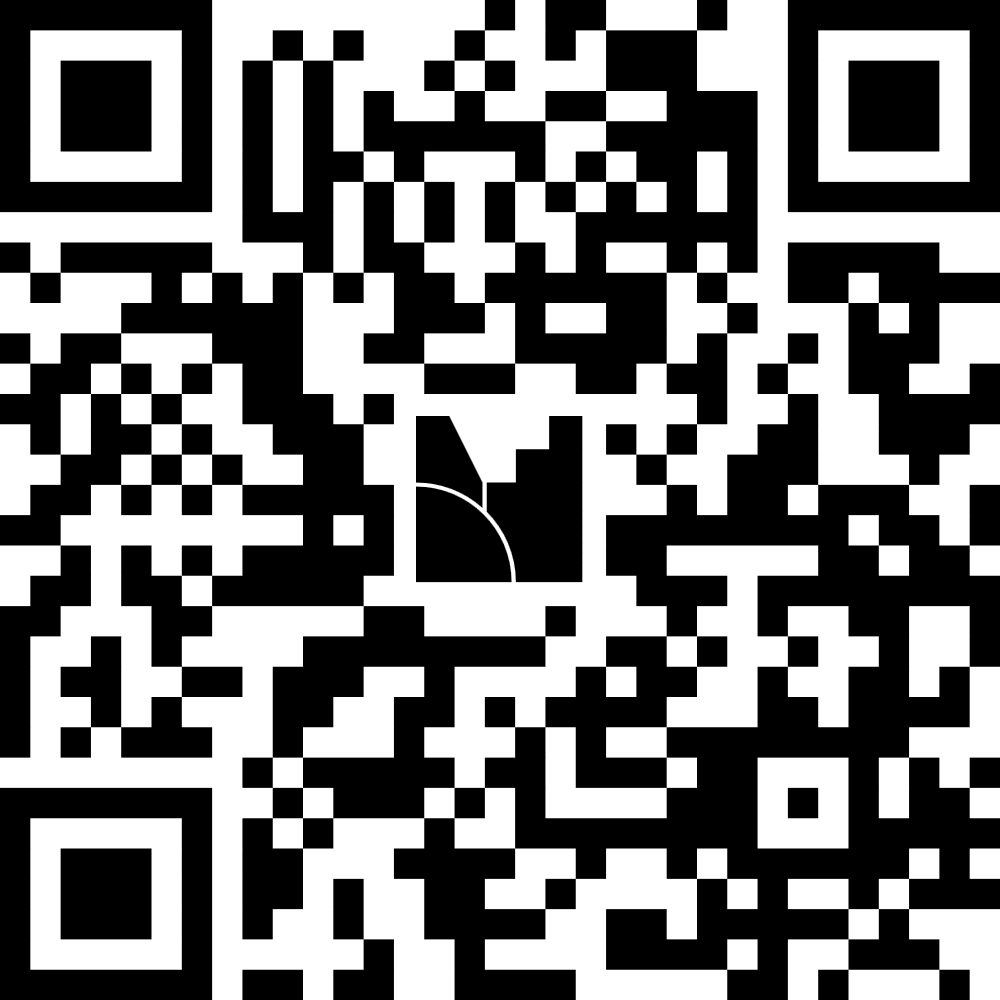
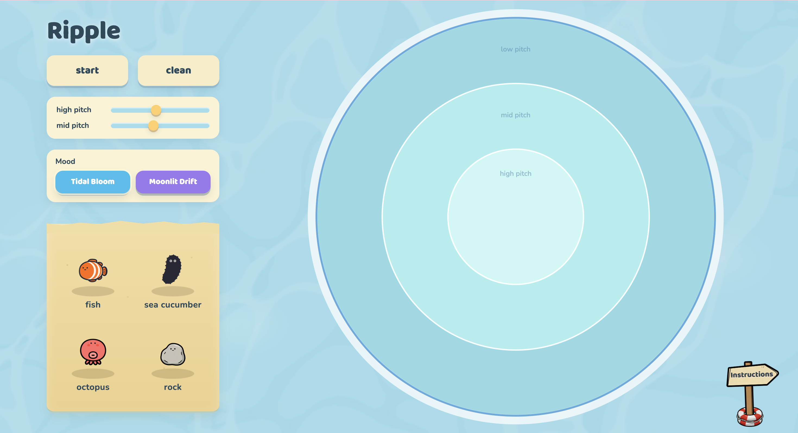
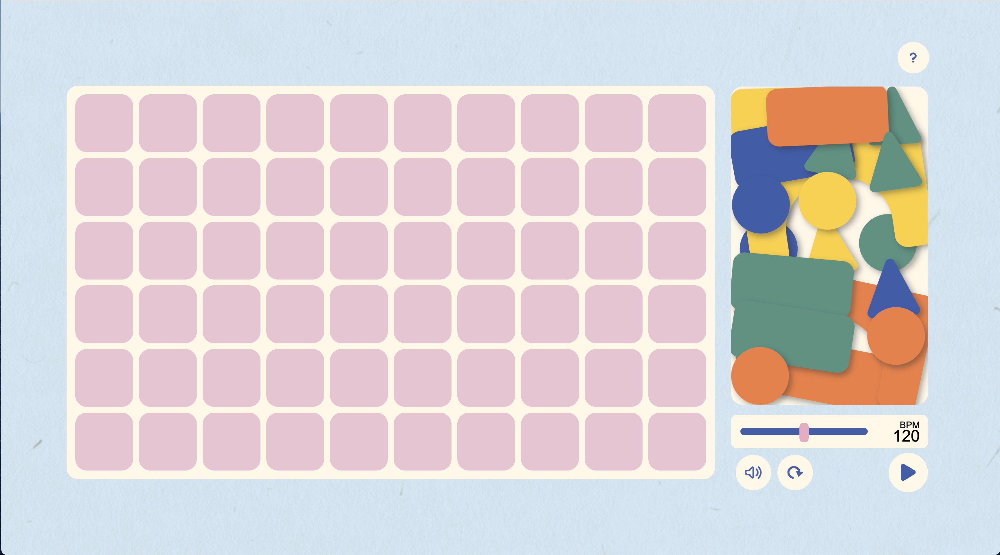
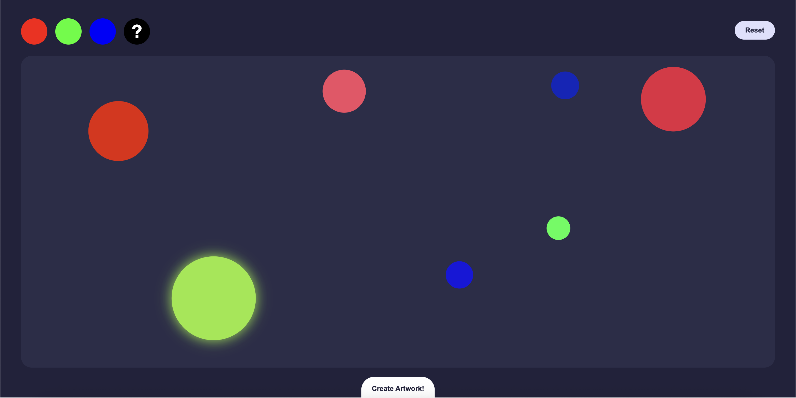
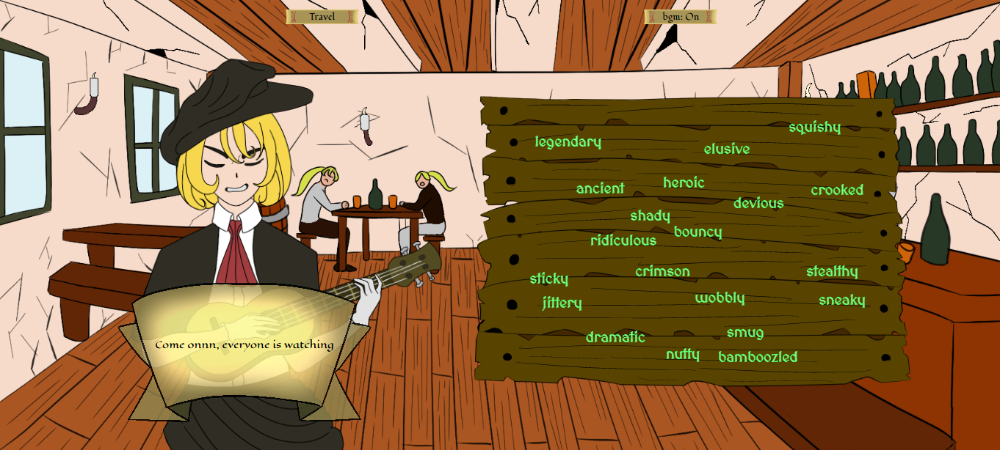

This page contains the list of links to the creative tools created within the Mediated Expression Studio. Students were asked to design and build a small interactive expressive tools for web browsers, guided by a specific creative context of their choice. The tools are intended to be of limited scope and experiment with the novel application of interaction design principles such as information design, feedback and mapping.
Thursday 28/05 Link to feedback form

Creative Tools
-
Link to toolRipple : Elaine

This project is a browser-based interactive sound tool where users place aquatic creatures into a circular pool to create evolving soundscapes through movement and gentle collisions. Rather than direct control, users shape unique musical moments through arrangement, chance, and interaction.
-
Link to toolBubble Bloom : Iris
-
Link to toolBetween Typings : Spike
-
Link to toolBreath Visualization : Nora
-
Link to toolKlotz Beats : Jannalyn

Block Beats is an interactive browser-based music tool inspired by children's building blocks. By arranging colourful digital shapes on a grid, users create unique musical loops through playful experimentation. The project explores mapping and feedback by transforming a familiar childhood activity into a creative sound-making experience.
-
Link to toolEmoji Landscape : Jinge
Emoji Landscape is a small browser-based creative tool for building symbolic landscapes, city scenes and visual compositions with emoji. Instead of drawing with lines or brushes, users choose or randomise emoji, transform them, place them on a 9×9 grid, revise individual cells and export the final image.
-
Link to toolFuwakura : Ariannna
-
Link to toolEchoes of Peace : Strawberry
-
Link to toolDistortion Playground : Mino
Monday Archive
-
Link to toolPulse Diary : Fatta
-
Link to toolCrop-llage : Calvin
-
Link to toolFeedback Builder : Hao
-
Link to toolBouquet of Your Dreams : Sami
-
Link to toolMercular Surge : Jamie

Mercular Surge is an interactive art tool that utilises merging circles to create a realised artwork.
-
Link to toolA Bard's Tale : Duy

A Bard’s Tale is an interactive storytelling tool that places the users inside the perspective of a wandering bard, telling tales of real adventures that she made up. It is a mad-libs-inspired project that assists users in exploring new words by filling in the blanks, simplified to create an effortless user experience. The design of this tool makes it more akin to a video game than a creative tool, via the utilization of visuals, audio, words, and stories creating an immersive experience. It is a tool whose purpose is to provide users with humor and new vocabulary through exploration of its stories and themes.
-
Link to toolImage Editor : Cecile
-
Link to toolSketchy Sketch Sound : Vanessa
-
Link to toolBrushLoom : Yulia